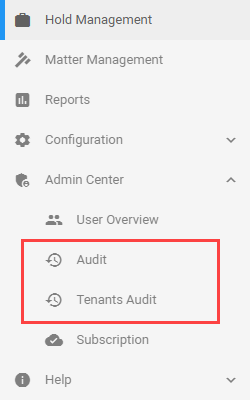
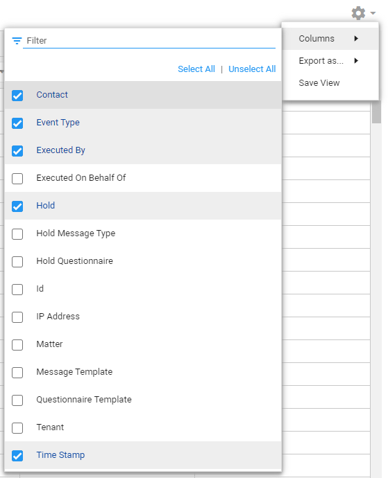
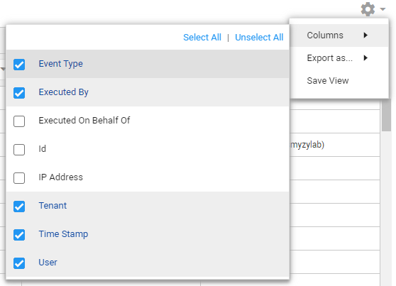

Note: Filtering/sorting works the same on all pages.
Issues of spoliation usually not arise when a hold is created, issued or even lifted, but at a much later date. Therefore, it is necessary to keep precise logs not only of what actions (event types) were taken, but also when. Whenever decisions are questioned, audit logs are an important source of information.
Select one of the Audit logs in the menu beneath Admin Center. Depending on your permissions, you can view either or both Audit logs: Audit and/or Tenants Audit.

View logged event types and filter/sort them via the columns.
On both the Audit pages, you can filter/sort all logged event types.
|
|
Note: Filtering/sorting works the same on all pages. |
View a short animation of filtering and sorting on this page: Hold Management.
To add/remove columns, select the Settings icon 
Then, select Columns and (de)select the appropriate columns.
For Audit, the following columns are available:

For Tenants Audit, the following columns are available:

Export the audit log as CSV, Excel (partial, 500 records) or PDF (partial, 500 records) file.
First, select the Settings icon
Then, select Export As... and select the format to which you want to export.
The Audit View might have been adjusted by filtering, sorting and/or by a specific selection of columns (via Settings > Columns).
To save this new view, select the Settings icon
Then, select Save View.